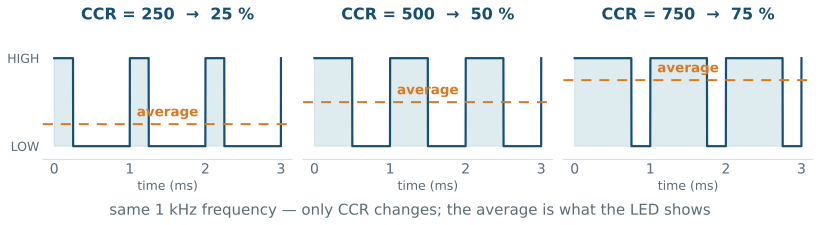
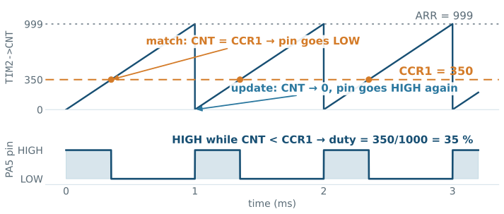
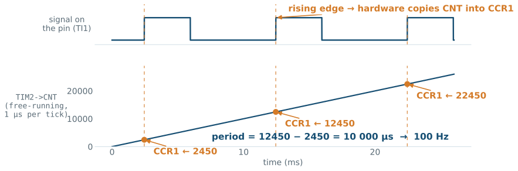
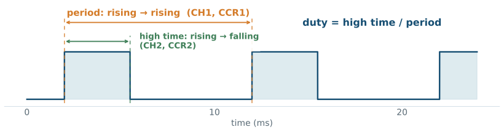

L08 - PWM, Output Compare, and Input Capture
This line makes LD2 glow at 25 % brightness—no loop, no delay, no interrupt. The hardware does everything.
Then we reverse the arrow. The same channel hardware, pointed at an input, timestamps a signal instead of making one—and the register it writes into is the one you just wrote by hand.
01 L04-5: you set a pin high or low—two levels, nothing between.
02 L06: events interrupt the program.
03 L07: a hardware counter measures time: clock → PSC → CNT → ARR → update.
04 TODAY: that counter takes over a pin—first to generate a waveform, then to measure one.
01 Explain PWM: frequency from ARR, duty cycle from CCR.
02 Configure a PWM channel on the real 16 MHz clock; dim an LED and position a servo.
03 Reverse the channel: capture edges into CCR and recover period, frequency, and duty.
04 Choose a timer width and tick that suit the signal—and subtract timestamps wrap-safely.
05 Verify and steer a channel live from the SFR view, in both directions.
Everything today sits on last week’s pipeline. Thirty-second check:
1 From 16 MHz, what do PSC = 15 and ARR = 999 produce?
2 Which register holds the live count, and what happens when it reaches ARR?
3 Why the two +1s?
1 MHz counting, update every 1 ms; CNT rolls to 0 and UIF sets; hardware divides by value + 1. If any of these felt shaky—revisit L07 before the lab.
01 DIM AN LED: “half brightness” is not high and not low.
02 POSITION A SERVO: the motor wants a pulse width, repeated precisely.
03 DRIVE A MOTOR: speed control means controlling average power.
A digital pin has two levels—but it can switch between them fast. Control the ratio, and the average becomes any value you want.

Duty cycle = the fraction of each period spent HIGH. The LED, the motor, and your eye all respond to the average.
In-lecture demos: duty vs. mean value · PWM through an RC filter.

L07’s pipeline, plus a compare stage:
01 CNT still counts 0 → ARR, update, repeat—nothing changed.
02 Each channel adds a capture/compare register CCR1…CCR4 and a comparator against CNT.
03 In PWM mode 1 the pin is HIGH while CNT < CCR, LOW after the match.
ARR still owns the frequency. CCR owns the duty. Two registers, two independent knobs.
Deep dive: RM0368 Rev 6, §13.3.9 PWM mode — p. 336.
For a 1 kHz, 35 % PWM from the 16 MHz clock:
16 MHz ÷ (PSC + 1) = 16 MHz ÷ 16 = 1 MHz (PSC = 15)
1 MHz ÷ (ARR + 1) = 1 MHz ÷ 1000 = 1 kHz (ARR = 999)
duty = CCR ÷ (ARR + 1) = 350 ÷ 1000 = 35 % (CCR = 350)PSC = 15 makes one tick = 1 µs. Keep it all term: every ARR and CCR is then a time in microseconds.
With ARR = 999, the counter has 1000 states—so:
CCR1 |
Pin behavior | Duty |
|---|---|---|
0 |
never high | 0 % |
350 |
high for 350 of 1000 states | 35 % |
999 |
high for 999 of 1000 states | 99.9 % |
1000 |
CNT < 1000 is always true |
true 100 % |
The +1 rule strikes again: full-on needs CCR = ARR + 1, not CCR = ARR.
Required: 2 kHz PWM at 30 % duty from 16 MHz, keeping the 1 µs tick.
1 PSC?
2 ARR?
3 CCR1?
PSC = 15 (1 MHz), ARR = 499 (500 µs period → 2 kHz), CCR1 = 150 (150/500 = 30 %).
The GPIO lessons return: PA5 must be handed over to TIM2.
01 MODER bits 11:10 = 10 — alternate function, the fourth mode from L04’s table.
02 AFR selects which peripheral: AF1 routes PA5 to TIM2_CH1.
03 From then on the timer drives the pin—HAL_GPIO_WritePin no longer applies.
PA5 is LD2. The LED you have blinked since L01 is wired to a timer channel—today it dims with zero wiring.
Deep dive: RM0368 Rev 6, GPIOx_AFRL — p. 162; the pin-to-AF table is in the STM32F401RE datasheet (DS10086), Alternate function mapping.
01 Click PA5 → select TIM2_CH1 (replaces the GPIO_Output role it had all term).
02 In Timers → TIM2: Clock Source Internal, Channel 1 = PWM Generation CH1.
03 Parameters: Prescaler 15, Counter Period 999, Pulse 0 (start dark).
04 Generate; verify MX_TIM2_Init() and the AF pin setup in the generated GPIO code.
htim2.Instance = TIM2;
htim2.Init.Prescaler = 15; // 16 MHz -> 1 MHz: 1 tick = 1 us
htim2.Init.CounterMode = TIM_COUNTERMODE_UP;
htim2.Init.Period = 999; // 1 MHz -> 1 kHz PWM
htim2.Init.AutoReloadPreload = TIM_AUTORELOAD_PRELOAD_ENABLE;
HAL_TIM_PWM_Init(&htim2);
TIM_OC_InitTypeDef sConfigOC = {0};
sConfigOC.OCMode = TIM_OCMODE_PWM1; // high while CNT < CCR
sConfigOC.Pulse = 0; // initial CCR1: 0 % duty
sConfigOC.OCPolarity = TIM_OCPOLARITY_HIGH;
HAL_TIM_PWM_ConfigChannel(&htim2, &sConfigOC, TIM_CHANNEL_1);Pulse is the HAL’s name for the CCR value—just as Period was its name for ARR.
Deep dive: UM1725 Rev 8, TIM functions — p. 1065.
HAL_TIM_PWM_Start(&htim2, TIM_CHANNEL_1); // once
__HAL_TIM_SET_COMPARE(&htim2, TIM_CHANNEL_1, 250); // 25 %
__HAL_TIM_SET_COMPARE(&htim2, TIM_CHANNEL_1, 800); // 80 %01 After Start, the hardware produces the waveform forever—the CPU is completely free.
02 Changing duty is one register write. No loop is “running the PWM.”
03 CCR is preloaded (L07’s preload lesson): the new duty takes effect at the next period—never mid-pulse, so no glitches.
HAL_TIM_PWM_Start(&htim2, TIM_CHANNEL_1);
uint32_t t_fade = 0; int32_t duty = 0, dir = +5;
while (1) {
if ((g_ms - t_fade) >= 10U) { // L07's tick pattern
t_fade = g_ms;
duty += dir;
if (duty >= 1000 || duty <= 0) dir = -dir;
__HAL_TIM_SET_COMPARE(&htim2, TIM_CHANNEL_1, (uint32_t)duty);
}
/* other work continues */
}The timer makes the light; the 1 ms tick schedules the changes. Two timers, two jobs, zero blocking.
01 TIM2–TIM4 each provide four channels: CCR1 … CCR4, one comparator each.
02 All four share PSC, ARR, CNT — same frequency, independent duty cycles.
03 Four LEDs, or a servo pair, or an RGB strip—from one timer.
The 1 µs tick makes the contract trivial:
PSC = 15 → 1 MHz: one tick = 1 µs
ARR = 19999 → 20 000 µs frame = 20 ms → 50 Hz
CCR = 1000 → 1.0 ms pulse → 0°
CCR = 1500 → 1.5 ms pulse → 90°
CCR = 2000 → 2.0 ms pulse → 180°CCR is the pulse width in microseconds. Choose units once, and the register values become readable.
/* TIM3 CH1 on PA6 (AF2), PSC = 15, ARR = 19999 */
HAL_TIM_PWM_Start(&htim3, TIM_CHANNEL_1);
__HAL_TIM_SET_COMPARE(&htim3, TIM_CHANNEL_1, 1500); // center: 90 deg01 Clamp commands to 1000…2000—outside the contract, cheap servos buzz or strain.
02 The servo holds its angle as long as pulses keep coming; the timer keeps them coming.
03 Sweep by stepping CCR from the tick loop, exactly like the breathing LED.
1 With the servo numbers above, what CCR commands 45°?
2 What does CCR = 2600 risk?
3 Could this servo share TIM2 with the 1 kHz LED? Why not?
45° is halfway between 0° (1000) and 90° (1500) → CCR = 1250. 2600 µs is outside the contract—mechanical strain. And no: channels share ARR, so one timer = one frequency; the LED runs at 1 kHz, the servo needs 50 Hz.

In-lecture demo: interactive capture animation.
01 On the selected edge, hardware copies the live CNT into CCR1—a timestamp, not a count of events.
02 The same instant, CC1IF sets in SR—a pending flag per channel, exactly like UIF in Week 7.
03 With CC1IE set in DIER, the flag raises the timer’s interrupt—the Week 6 path, one more source.
Precision comes from hardware doing the timestamping. Interrupt latency delays the reading, never the value.
The captured numbers are only as good as the clock behind them:
01 Keep the course tick: PSC = 15 → 1 MHz → timestamps in microseconds.
02 Free-run the counter: ARR at maximum; captures are just reads of a running clock.
03 Mind the width: 16-bit TIM4 wraps at 65.5 ms; 32-bit TIM2/TIM5 at 71.6 minutes.
| Signal | At 1 µs tick, use |
|---|---|
| 1 kHz PWM (1 ms period) | any timer—TIM4 is fine |
| 2 Hz blink (500 ms period) | TIM2/TIM5, or a slower tick |
01 Click PB6 → TIM4_CH1 (AF2 — the pin handover, exactly as in L08).
02 In Timers → TIM4: Channel 1 = Input Capture direct mode.
03 Parameters: Prescaler 15, Counter Period 65535 (free-run), polarity rising.
04 NVIC: enable TIM4 global interrupt; generate and verify, as always.
void HAL_TIM_IC_CaptureCallback(TIM_HandleTypeDef *htim)
{
if (htim->Instance == TIM4 &&
htim->Channel == HAL_TIM_ACTIVE_CHANNEL_1) {
uint16_t now = HAL_TIM_ReadCapturedValue(htim, TIM_CHANNEL_1);
period_us = (uint16_t)(now - last); // wrap-safe on 16 bits
last = now;
}
}01 One shared callback for all capture channels—check instance and channel.
02 ReadCapturedValue returns CCR1—the hardware’s timestamp.
03 The cast keeps the subtraction 16-bit—wrap-safe, as since Week 6.
01 Consecutive same-polarity edges → one full period.
02 The 1 µs tick makes the arithmetic readable—divide 10⁶ by the period in µs.
03 Average several periods for jittery sources.
TIM4, 1 µs tick, rising edges. Captured values: 64000, then 1500.
1 What is the period? (Careful—16 bits.)
2 What frequency is that?
3 What is the slowest signal TIM4 can measure this way at 1 µs?
(uint16_t)(1500 - 64000) = 3036 µs → ≈ 329 Hz. The unsigned wrap did the right thing. Slower than one wrap (65.5 ms, ≈ 15 Hz) and the measurement silently lies—choose TIM2/TIM5 or a slower tick.

One pin, two channels listening: CH1 times the rising edges (period), CH2 the falling edge (high time).
01 The hardware can automate the pair: a rising edge resets CNT to zero.
02 Then CCR1 holds the period and CCR2 the high time—directly, no subtraction.
03 Costs the whole timer (the reset is global)—the manual pair keeps the timer free-running for other channels.
Deep dive: RM0368 Rev 6, §13.3.6 PWM input mode — p. 334.
01 Real edges ring and bounce—Week 6’s lesson, now on measurement inputs.
02 Each channel has a digital filter (ICFilter, 0–15): the edge must hold for N samples before it counts.
03 It is the debounce idea, executed in silicon—no HAL_GetTick() needed.
01 If a new edge arrives before you read CCR1, the old timestamp is overwritten.
02 Hardware confesses: the overcapture flag CC1OF sets in SR.
03 Seeing CC1OF means your code reads too slowly for the signal—filter it, prescale the capture, or restructure.
| Register | Generating (compare) | Measuring (capture) |
|---|---|---|
CCR1…CCR4 |
you write the duty | hardware writes the timestamp |
CCMR1/2 |
output mode, PWM mode 1, preload | CC1S direct/indirect, ICF filter |
CCER |
CC1E output enable, CC1P polarity |
CC1E capture enable, CC1P edge |
SR |
UIF update |
CC1IF captured · CC1OF overcapture |
DIER |
UIE |
CC1IE/CC2IE |
PSC / ARR / CNT |
the L07 time base, unchanged | the L07 time base, unchanged |
One register file, one name—capture/compare. The direction bit in CCMR decides who writes CCR: you, or the pin.
Generating:
01 Pause anywhere: TIM2->CCR1 holds your duty; CNT keeps moving.
02 Write CCR1 from the SFR view—brightness changes with no code at all.
03 MODER bits 11:10 read 10: the pin belongs to the timer, not to WritePin.
Measuring:
04 Feed a signal, pause repeatedly: TIM4->CCR1 changes by itself—nobody in your code wrote it.
05 Flip CC1P in CCER live: the captures move to the other edge.
06 Stay paused through several edges, then resume: CC1OF is set—you watched an overcapture.
A successful build proves none of this. The SFR view does.
01 WRONG CLOCK ASSUMED: 84 MHz examples on our 16 MHz board—every frequency off by 5.25×.
02 PIN NOT HANDED OVER: MODER still 01—WritePin works, PWM does not.
03 CCR vs ARR CONFUSION: duty above 100 % requested, or frequency “changed” via CCR.
04 THE 100 % OFF-BY-ONE: CCR = ARR is 99.9 %, not full-on.
05 ONE TIMER, ONE FREQUENCY: channels share ARR—the 1 kHz LED and the 50 Hz servo need different timers.
06 WRAP IGNORED: 16-bit timer, slow signal—period numbers that lie silently.
07 SIGNED SUBTRACTION: the cast matters—(uint16_t)(now - last).
08 FORGOT Start_IT: configured, armed—never started. CCR1 stays frozen.
Close the loop. TIM2 generates PWM on PA5, one jumper carries it to PB6, and TIM4 measures it back—frequency and duty compared against the values you configured.
You will show:
PSC/ARR/CCR chosen from 16 MHz, with units explained;.ioc and the generated code;CC1OF;✓ Explain PWM frequency (ARR) and duty (CCR) with the mechanism figure.
✓ Configure a PWM channel and command a servo angle as a pulse width.
✓ Explain edge → CNT snapshot → CCR, and configure direct and indirect capture.
✓ Compute frequency and duty from timestamps, wrap-safe.
✓ Choose timer width and tick for the signal being measured.
✓ Read the evidence in both directions: CCR you wrote, CCR the hardware wrote, CC1OF.
Next: the ADC—when the signal is not digital at all.
htim3.Init.Prescaler = 15; // 16 MHz timer clock
htim3.Init.Period = 4999;
__HAL_TIM_SET_COMPARE(&htim3, TIM_CHANNEL_1, 1250);TIM4 measures a different signal on a 1 µs tick: rising captures 4000 then 9000; the falling capture between them is 5250.
01 GENERATE: What frequency and duty cycle does the TIM3 code above produce?
02 KNOBS: Which register sets the frequency, and which the duty?
03 MEASURE: From the TIM4 captures, what are the signal’s period, frequency, and duty?
04 MECHANISM: Who wrote 5250 into CCR2, and at exactly what moment?
05 EVIDENCE: Which flag tells you a capture was lost?
Every concept in this lecture, with page-linked sources: academic references.
EE5203 - L08